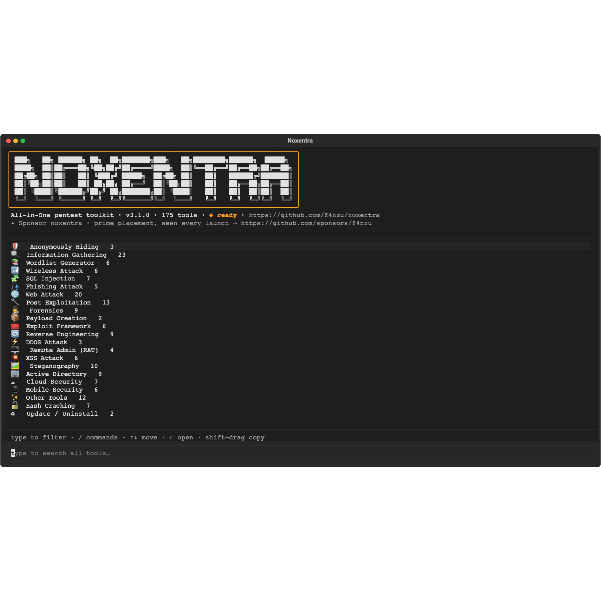

List-form subprocesses
Every command runs as an explicit argument list. Never shell=True, never
curl | bash, and never forced sudo.
Noxentra organizes 294 security tools across 21 categories into an interactive TUI and a headless pipeline orchestrator. Plan steps in plain English, run scoped scans, and normalize findings into Markdown, HTML, and SARIF.
pipx install noxentra
Captured directly from the Textual TUI and classic REPL.

Built to be predictable on authorized engagements and safe in CI.
Every command runs as an explicit argument list. Never shell=True, never
curl | bash, and never forced sudo.
AI recommendations, command lookup, and reporting degrade cleanly to deterministic local behavior with zero API keys configured.
Untrusted scan output is wrapped in <scan_data> delimiters; AI triage only reads
verified entries in findings.json.
Parses output from nmap, subfinder, httpx, nuclei,
trivy, grype, terrascan, kube-hunter,
cloudsplaining, and more.
Pass --scope-out globs or exclusion files; out-of-scope targets are filtered and logged
before any step executes.
Optional LLM and GitHub tokens are written solely to ~/.noxentra/.env with 0600
permissions.
Click any pipeline to preview its CLI command, or run via /engage.
noxentra --engagement acme --targets example.com --pipeline full_recon --report --format all
| Pipeline | Chain | Output |
|---|---|---|
| recon | Passive subdomain discovery → live HTTP probe → vulnerability scan | findings.json |
| full_recon | nmap → subdomain discovery → httpx → nuclei |
findings.json |
| dns_enum | subfinder → dnsx resolution → httpx |
findings.json |
| web_enum | httpx → parallel gobuster directory brute-force |
findings.json |
| web_deep | httpx → whatweb → parallel ffuf fuzzing |
findings.json |
| passive_urls | gau archive URLs → httpx → nuclei |
findings.json |
| tls_recon | subfinder → tlsx cert/SAN probe → httpx |
findings.json |
| cloud_scan | trivy fs → grype SBOM/vulnerability cross-check |
findings.json |
| container_scan | trivy image → grype |
findings.json |
| iac_scan | terrascan IaC policy scan → trivy fs |
findings.json |
| k8s_scan | kube-hunter passive Kubernetes cluster scan |
findings.json |